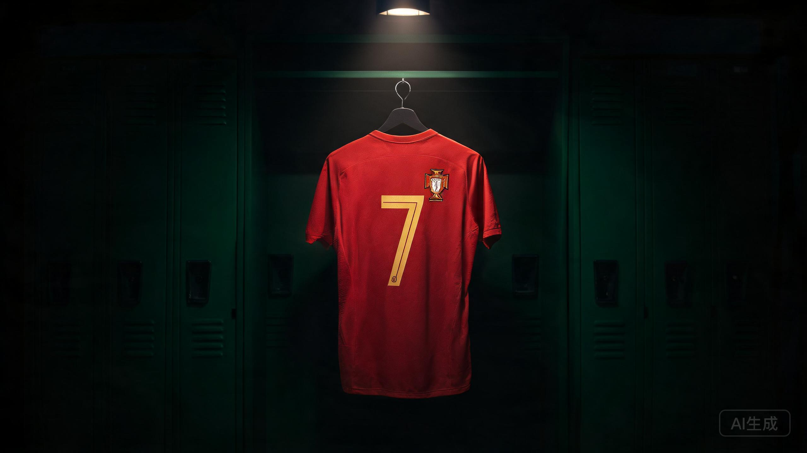
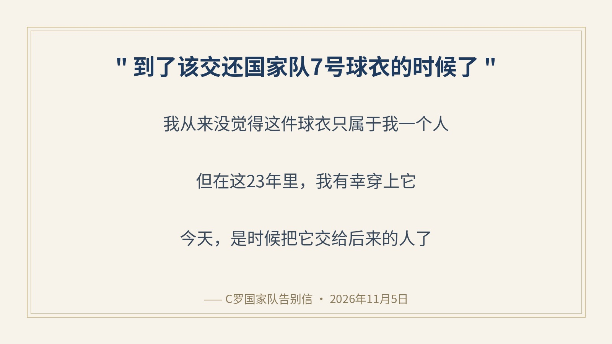
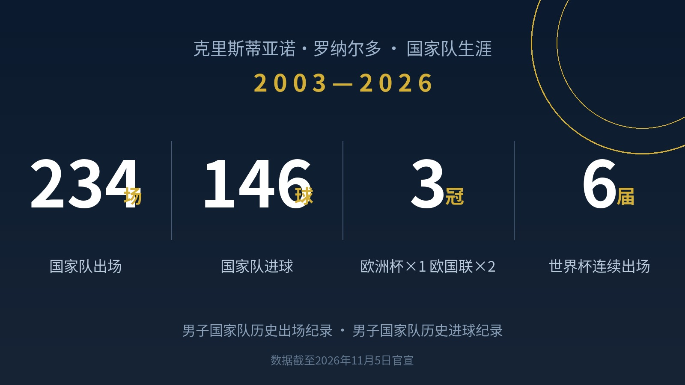

▲ 7号球衣概念图（AI创作，非官方素材）
北京时间11月5日，41岁的C罗在社交媒体发布告别信与视频，正式宣布从葡萄牙国家队退役。23年国脚生涯，就此落幕。
这个答案，其实夏天就欠下了。7月6日达拉斯，世界杯1/8决赛，葡萄牙0-1憾负西班牙。赛后有记者追问未来，他的回答是：先陪陪家人，不在情绪激动的时候做决定。
四个月后，他做完了这个决定。
01 交还7号的人
告别信里最戳人的，是这一句：
"到了该交还国家队7号球衣的时候了。我从来没觉得这件球衣只属于我一个人。但在这23年里，我有幸穿上它，也肩负着捍卫它的责任。"
23年，他把"属于"两个字让给了后辈，把"捍卫"两个字留给了自己。视频里他还说：葡萄牙永远在我心中，是时候将这件球衣传承给未来了。

▲ 告别信金句 · 据公开报道整理
02 一串后无来者的数字

▲ 国家队生涯数据（自制图，据公开报道整理）
234场，146球。男子国家队历史出场纪录、历史进球纪录，两项都在他手里。而且这两串数字短期内看不到挑战者——第二名连他的零头都还差着一大截。
3座国家队奖杯：2016年欧洲杯、2019年欧国联、2025年欧国联。从2004年本土欧洲杯决赛后坐在草皮上哭的少年，到2016年决赛伤退却站在场边"指挥"的老队长，再到两年一冠的欧国联时代——葡萄牙的黄金二十年，就是他的二十年。
连续六届世界杯进球，历史第一人。2006到2026，整整二十年，每一届世界杯都能看到这个7号起跳、甩头、张开双臂滑跪。
03 纪录终会被超越，他说
告别信里还有一句话，很多人第一遍读会略过：
"奖杯与纪录，终有被超越的一天，但为国出战的记忆永存。"
这大概就是他和纪录的关系：拼命去创造，坦然目送它被拿走。正如他在世界杯出局那天说的——"Sometimes we win, sometimes we lose, and we need to keep going."
至于那件7号会落到谁的肩上：信里没说，视频里没说。下一个穿上它的人，接过的不是号码，是23年攒下的债务——每次触球，都会有人拿来和那个男人比。
这大概就是告别信里那句"这不是一个容易的决定"的分量。
04 你记忆里的第一个画面
是2004年欧洲杯那个哭鼻子的17岁小孩？是2016年巴黎之夜场边挥手的"编外教练"？还是2026年达拉斯夜里的那个背影？
评论区聊聊：你的C罗国家队记忆，从哪个画面开始？点赞最高的故事，下期放进正文。
—— 感谢你读到这里，也谢谢那个7号 ——
信息来源：C罗本人社交媒体告别信与视频、FIFA官网、齐鲁晚报/光明网/锦观新闻等公开报道。数据截至2026年11月5日官宣。首图及概念图为AI创作（非官方素材），数据卡为自制图，据公开报道整理。